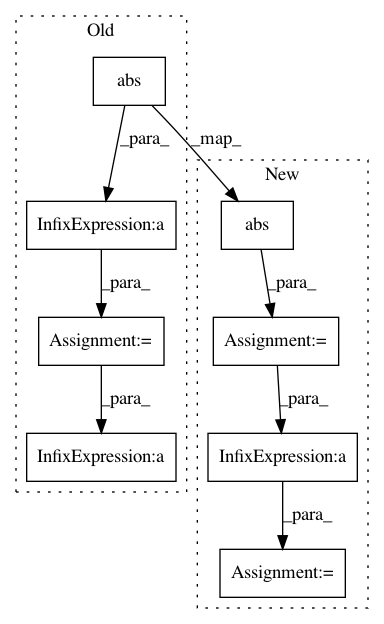

f1271b4ce81cdecc940b8ffa8a1f12c3476ef01f,utils/audio.py,AudioProcessor,_griffin_lim,#AudioProcessor#Any#,110
Before Change
for i in range(self.griffin_lim_iters):
S_t = self._istft(S_best)
est = self._stft(S_t)
phase = est / np.maximum(1e-8, np.abs(est))
S_best = S * phase
S_t = self._istft(S_best)
y = np.real(S_t)
return y
After Change
def _griffin_lim(self, S):
angles = np.exp(2j * np.pi * np.random.rand(*S.shape))
S_complex = np.abs(S).astype(np.complex)
y = self._istft(S_complex * angles)
for i in range(self.griffin_lim_iters):
angles = np.exp(1j * np.angle(self._stft(y)))
y = self._istft(S_complex * angles)
return y
In pattern: SUPERPATTERN
Frequency: 3
Non-data size: 8
Instances
Project Name: mozilla/TTS
Commit Name: f1271b4ce81cdecc940b8ffa8a1f12c3476ef01f
Time: 2018-08-09
Author: egolge@mozilla.com
File Name: utils/audio.py
Class Name: AudioProcessor
Method Name: _griffin_lim
Project Name: mozilla/TTS
Commit Name: e2d974e8be89cdbf7bfae6ed39ebe807e8033863
Time: 2018-04-17
Author: egolge@mozilla.com
File Name: utils/audio.py
Class Name: AudioProcessor
Method Name: _griffin_lim
Project Name: tsurumeso/waifu2x-chainer
Commit Name: 055c61d73514d471158ee36b83762802c8d4e3d4
Time: 2018-07-14
Author: tsurumeso@gmail.com
File Name: lib/loss/clipped_weighted_huber_loss.py
Class Name: ClippedWeightedHuberLoss
Method Name: forward